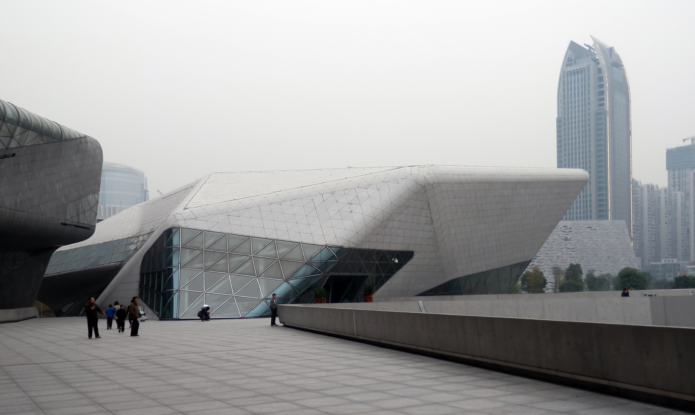
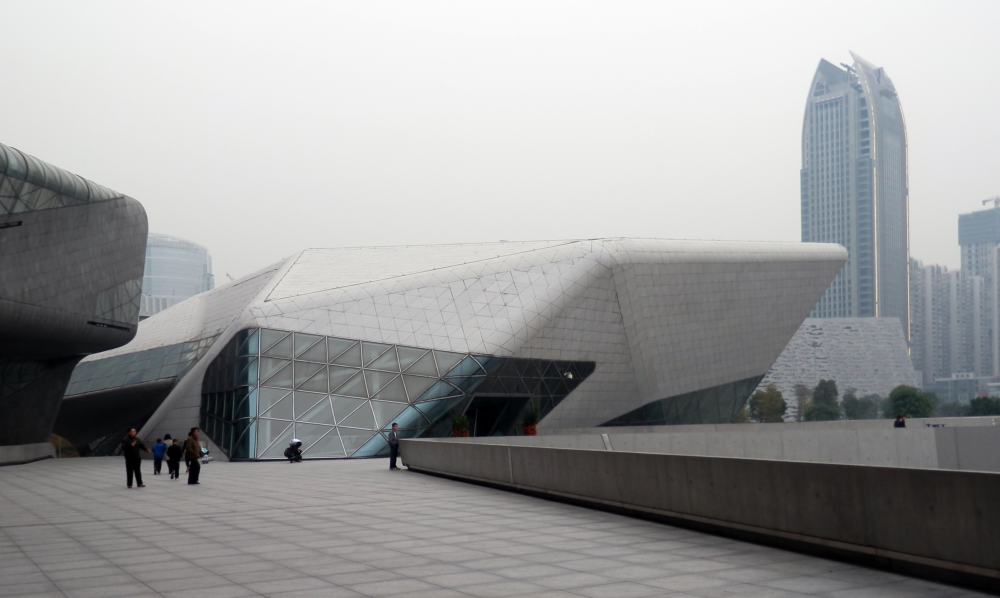

Descripion
L'Opéra de Guangzhou est un opéra chinois situé à Guangzhou,
dans la province du Guangdong , en République populaire de Chine .
Conçu par Zaha Hadid , il a ouvert le 9 mai 2010.
Histoire
En avril 2002, un concours international d' architecture a attiré Coop Himmelb,
Rem Koolhaas et Zaha Hadid - chacun produisant des dessins détaillés.
En novembre 2002, le "double caillou" de Zaha Hadid a été annoncé le gagnant et la cérémonie d'inauguration a eu lieu au début de 2005.
Le théâtre est devenu le plus grand centre en effectuant la Chine du Sud et est l' un des trois plus grands théâtres de la nation aux côtés de Pékin est Centre national des arts du spectacle et Shanghai 's Grand Théâtre de Shanghai .
Mai 2010 a vu le cinéaste américain Shahar Stroh diriger la production de première de la maison d'opéra:
Puccini l » opéra Turandot qui avait été au cours des années précédentes un opéra controversé en Chine.
Le projet a coûté 1,38 milliard de yuans.
Tourisme
L'Opéra de Guangzhou est un Opéra a l'esthetique magnifique qui attire plein de monde,
ce qui en fait une belle destination touristique.
 
